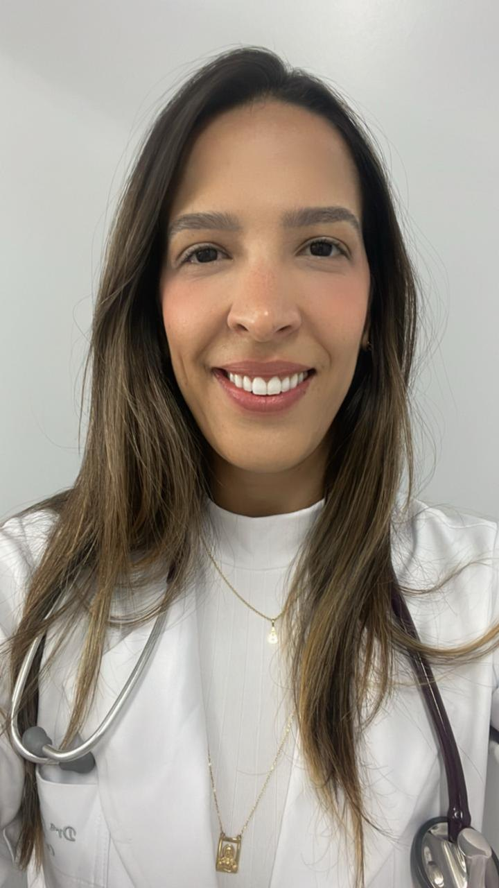
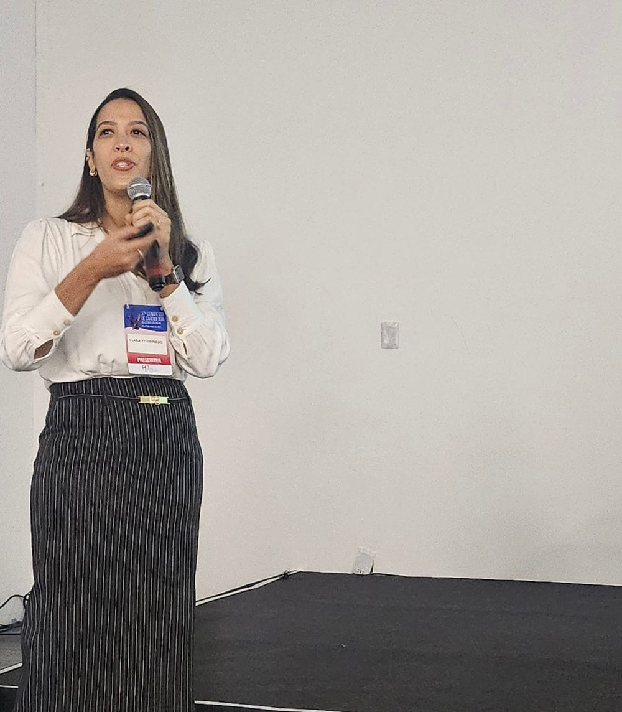
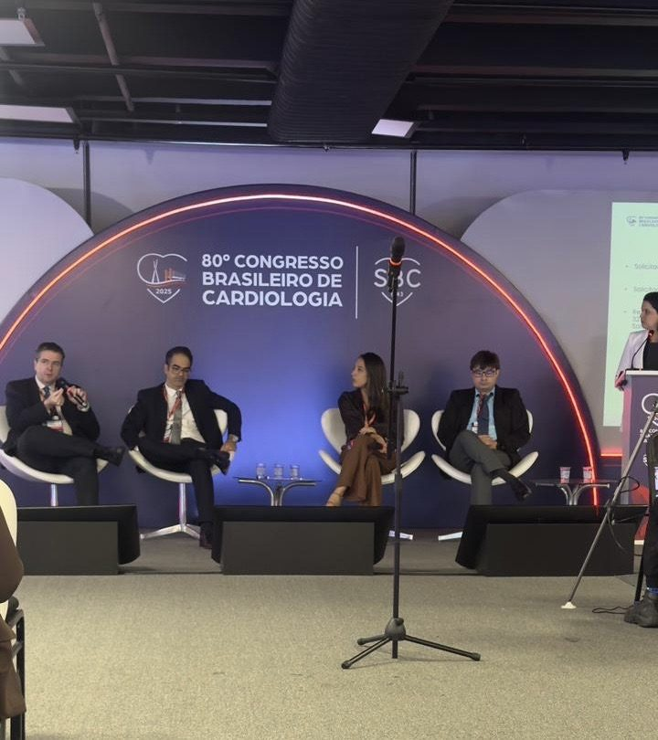
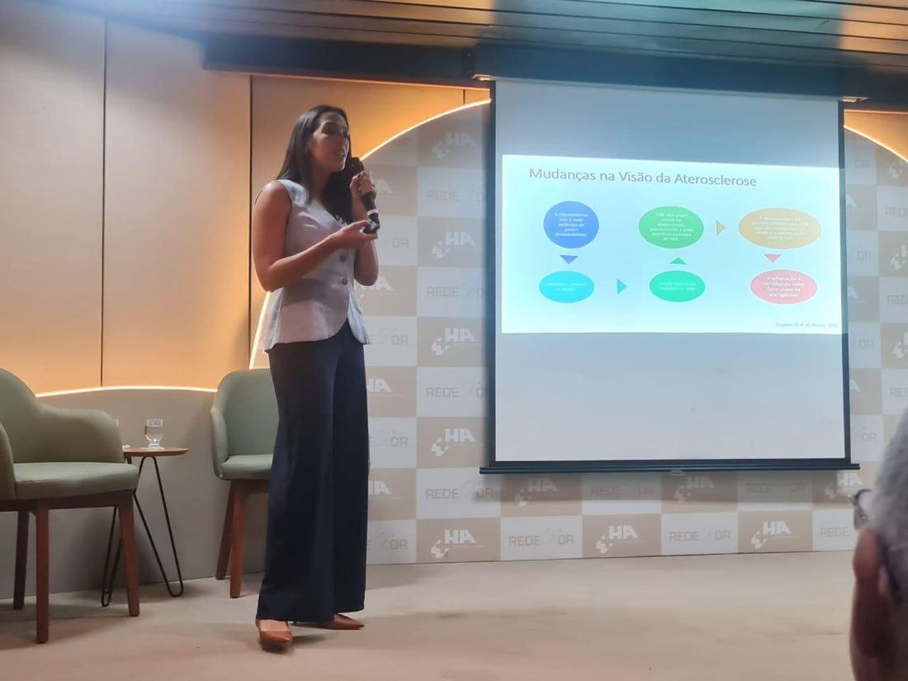
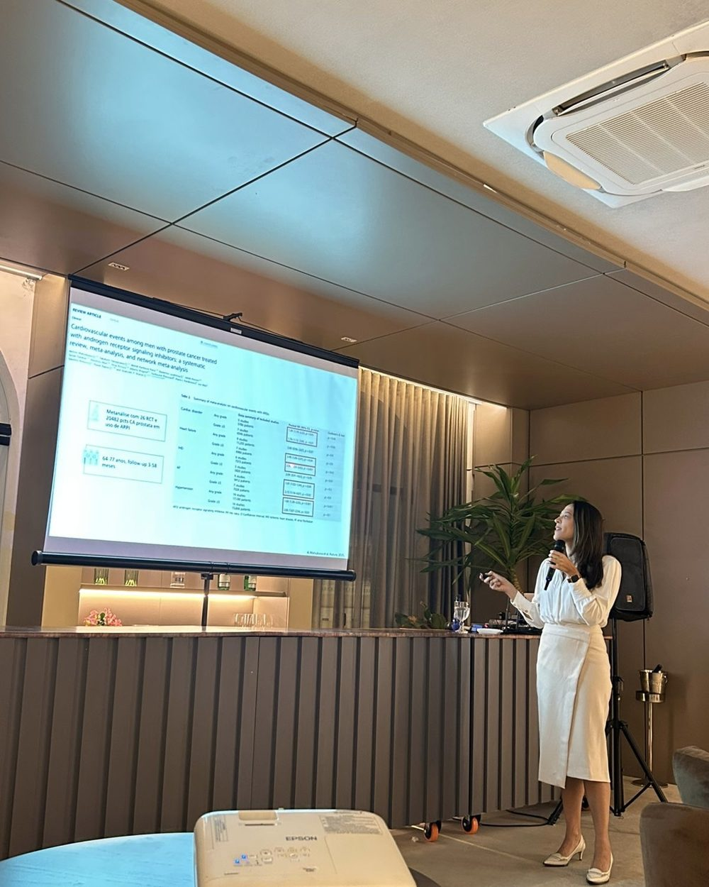
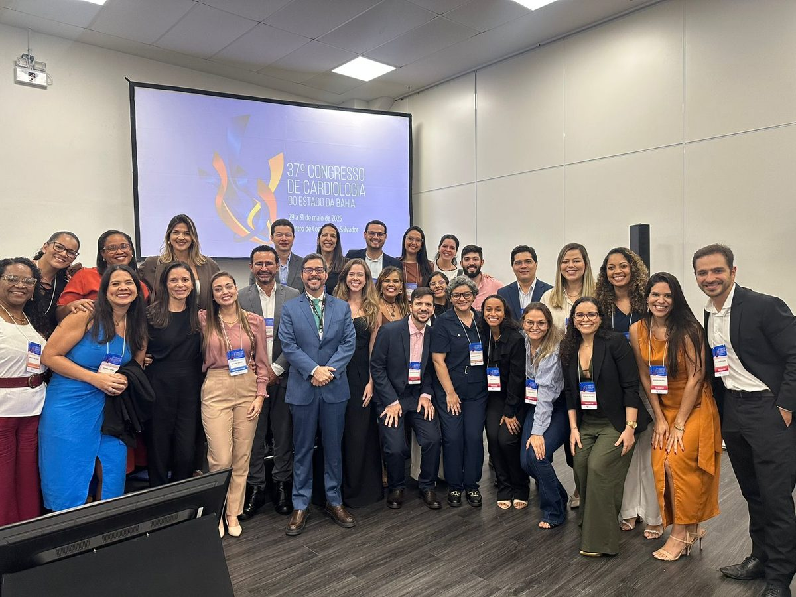

Cardiologia · RQE 17528
Dra. Clara Salles
Cardiologista em Salvador: o cuidado do coração em cada fase — inclusive durante e depois do tratamento do câncer.
Título de especialista em Cardiologia pela SBC, residência no Hospital Sírio-Libanês, fellowship em cardio-oncologia no ICESP/USP e coordenação da residência de Cardiologia do Hospital Ana Nery.

Por onde começar
O que traz você ao cardiologista?
Escolha o assunto e leia no seu tempo. Cada página explica o que costuma ser avaliado e como é o acompanhamento. A indicação é individual, definida em consulta.
Vou começar ou estou em tratamento de câncer
O coração antes, durante e depois.
Cardio-oncologia CoraçãoSinto aperto no peito ou cansaço
Angina e doença das coronárias.
Coração e artérias PrevençãoQuero cuidar da pressão e do colesterol
Fatores de risco, peso e sono.
Pressão e fatores de risco ExamePediram um ecocardiograma
O que o exame mostra.
EcocardiogramaCardio-oncologia
Antes, durante e depois.
Alguns tratamentos contra o câncer podem afetar o coração e os vasos. A cardio-oncologia acompanha o coração em cada fase, junto com o oncologista — sem substituir o tratamento do câncer. A indicação é individual, definida em consulta.
- AntesAntes do tratamento
Conhecer o coração de partida: história, pressão, colesterol, diabetes, remédios e exames de base quando indicados.
- DuranteDurante o tratamento
Acompanhar o coração junto com a equipe de oncologia, no ritmo que o tipo de tratamento pede.
- DepoisDepois do tratamento
Seguir acompanhando: alguns efeitos no coração podem aparecer mais tarde, e os fatores de risco continuam importando.
No ritmo do cuidado
Como é a consulta.
Nas avaliações do Google, as palavras que mais aparecem são humana, confiança, atenção e estudiosa. A consulta segue esse ritmo: ouvir, examinar, explicar e decidir junto.
- Conversa
Sintomas, histórico da família, remédios em uso e, se for o caso, o tratamento oncológico.
- Exame físico
Pressão, ausculta do coração e dos pulmões, pulsos e sinais de alerta.
- Exames, se precisar
Eletrocardiograma, ecocardiograma ou laboratório quando ajudam a decidir — e explicados.
- O plano
Metas, remédios e acompanhamento combinados com você, com calma e clareza.
Dor no peito forte ou que não passa, falta de ar intensa, desmaio ou palpitação com mal-estar? Não espere a consulta: procure a emergência mais próxima ou ligue para o SAMU (192). O consultório atende com hora marcada e não é serviço de urgência.
Três frentes, um ritmo
Consultório, ensino e pesquisa.
Além de atender, a Dra. Clara coordena a formação de novos cardiologistas e faz doutorado em Medicina e Saúde na UFBA.
Nota 5,0 na ficha do Google.
Coordenadora do programa de residência do Hospital Ana Nery.
Artigos em revistas como os Arquivos Brasileiros de Cardiologia.
Trajetória
Da UFBA ao Ana Nery.
Formação em Salvador, Campinas e São Paulo, e a volta à Bahia para atender, ensinar e pesquisar.
- 2012Medicina · UFBA
Graduação na Universidade Federal da Bahia.
- 2015Clínica Médica · UNICAMP
Residência médica em Campinas (SP).
- 2018Cardiologia · Sírio-Libanês
Residência em Cardiologia e título de especialista pela SBC.
- 2018–19Fellowship · ICESP
Fellowship em cardio-oncologia no Instituto do Câncer do Estado de São Paulo (FMUSP).
- Ana NeryEcocardiografia
Fellow em ecocardiografia no Hospital Ana Nery; mestrado na UFBA.
- HojeEnsino e pesquisa
Doutorado na UFBA (ingresso em 2022) e coordenação da residência de Cardiologia do Ana Nery.

Na voz dela
“Sua mensagem me inspira a continuar cuidando com dedicação e atenção. Gratidão pela confiança.”Dra. Clara, respondendo a uma avaliação no Google
humanaconfiançaatençãoestudiosadedicaçãorespeito
Em sala de aula
Ensinar também é cuidar.
Aulas, painéis e congressos de cardiologia, no Brasil e na Bahia.




Avaliações no Google
O que os pacientes contam.
Nota 5,0 na ficha do Google · trechos com nome abreviado
Fui por indicação de um amigo e ela correspondeu a todas as minhas expectativas. É muito segura nas explicações e sempre traz embasamento científico.
Dra. Clara é minha cardiologista e confio muito no seu trabalho! Sempre muito estudiosa, competente e humana. Explica tudo com calma e clareza.
Conduziu toda a consulta com muita atenção, paciência e cordialidade. Explicou tudo com clareza, ouviu minhas dúvidas com empatia e me transmitiu total confiança.
Pesquisa publicada
Ciência que volta para o consultório.
Artigos que a Dra. Clara assina, sobre coronárias, angina, insuficiência cardíaca e cardiopatia chagásica. Lista completa no ORCID.
Revisão, como primeira autora, sobre o papel da inflamação na doença das coronárias.
Ler o artigo ↗Arquivos Brasileiros de Cardiologia · 2024Alopurinol versus trimetazidina na anginaEnsaio clínico randomizado sobre o tratamento da angina.
Ler o artigo ↗ABC Heart Failure & Cardiomyopathy · 2025SALVA-CRTSacubitril/valsartana em pacientes com terapia de ressincronização cardíaca.
Ler o artigo ↗Pharmaceuticals · 2025Própolis verde na doença coronária crônicaEstudo piloto randomizado, como primeira autora.
Ler o artigo ↗British Journal of Clinical Pharmacology · 2022Sacubitril/valsartana na cardiopatia chagásicaSérie de casos clínicos e ecocardiográficos, como primeira autora.
Ler o artigo ↗Arquivos Brasileiros de Cardiologia · 2024Cardioversor-desfibrilador na prevenção secundáriaEstudo sobre a indicação de implantes de CDI.
Ler o artigo ↗Onde atendo
Caixa d'Água e Canela.
Atendimento com hora marcada: confirme o local, o dia e o horário com a equipe pelo WhatsApp.
Caixa d'Água · Salvador – BA
Como chegarCanela · Salvador – BA
Como chegarDúvidas frequentes
Perguntas comuns
Preciso estar em tratamento de câncer para consultar?
Não. A Dra. Clara é cardiologista e atende quem quer cuidar do coração, da pressão, do colesterol ou investigar sintomas. A cardio-oncologia é uma das áreas em que ela tem formação.
O que faz a cardio-oncologia?
Cuida do coração de quem vai fazer, está fazendo ou já fez tratamento contra o câncer, junto com o oncologista. Veja a página cardio-oncologia. A indicação é individual, definida em consulta.
Devo levar exames?
Sim: leve exames, laudos e a lista de remédios. Em cardio-oncologia, leve também o resumo do tratamento oncológico. Veja como é a consulta.
Atende plano de saúde?
Não há uma lista publicada. Confirme com a equipe, pelo WhatsApp, as formas de atendimento.
Onde e em que horário ela atende?
Atendimento com hora marcada: confirme o local, o dia e o horário com a equipe pelo WhatsApp. Veja onde atendo.
Estou com dor no peito agora. O que faço?
Dor no peito forte ou que não passa, falta de ar intensa ou desmaio pedem atendimento imediato: procure a emergência mais próxima ou ligue para o SAMU (192).
Agende
Cuidar do coração começa por uma boa conversa.
Consulta com hora marcada em Salvador. Fale com a equipe pelo WhatsApp (71) 98117-0756.